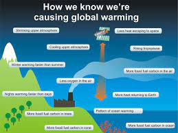

.jpg)
.jpg)
.jpg)
What does being extinct mean?
* What does being extinct mean? Extinction Means Being No Longer Exist or no longer alive. Extinction of a particular animal or plant species occurs when there are no more individuals of that species alive anywhere in the world - the species has died out. This is a natural part of evolution. However, sometimes extinctions happen at a much faster rate than usual.
* The Causes of Extinction: There are five major causes of extinction: habitat loss, an introduced species, pollution, population growth, and overconsumption. Many species have become extinct because of hunting and overharvesting, the conversion of wetlands and forests to croplands and urban areas, pollution, the introduction of invasive species, and other forms of human-caused destruction of their natural environments. Indeed, current rates of human-induced extinctions are estimated to be about 1,000 times greater than past natural rates of extinction, leading some scientists to call modern times the sixth mass extinction. This high extinction rate is largely due to the exponential growth in human numbers: growing from about 1 billion in 1850, the world’s population reached 2 billion in 1930 and more than 7.8 billion in 2020 and expected to reach about 10 billion by 2050. Because of increasing human populations, habitat loss is the greatest factor in current levels of extinction. For example, less than one-sixth of the land area of Europe has remained unmodified by human activity, and more than half of all wildlife habitat has been extinct in more than four-fifths of countries in the Old World tropics that span Africa, Asia, and Indonesia. Several ecological studies had reported dramatic decreases in wildlife populations worldwide and increases in the numbers of threatened and endangered species, especially among terrestrial mammals and vertebrates. Humans use thousands of the world’s species in their daily lives for food, shelter, and medicine. However, these natural resources are limited. People can take only so many fish from the sea or cut down so many acres of forests without permanently damaging ecosystems and threatening species. For many species, this “overharvesting” may mean total extinction. When people cut down forests, build cities, or make roads, they destroy habitats–the places where plants, animals, and other organisms live. Seeds catch in people’s clothes. Snakes stow away on airplanes. Settlers bring animals to control pests. When species land in new places, they often either prey upon the species already there or compete with them for food or space. Acid rain destroys forests. Oil spills kill coastal plants and animals. Poisons wash into waterways. Plastic trash entangles wildlife. It is easy to see how pollution is a big problem for biodiversity. Greenhouse gases, like carbon dioxide and methane, are building up in Earth’s atmosphere. They trap heat and contribute to a worldwide rise in temperature–a global warming that endangers the planet’s species and habitats.
* The effects of extinction: The loss of a predator can result in what is called a trophic cascade, which is an ecological phenomenon triggered by a predator’s extinction that can also impact populations of prey, which can cause dramatic ecosystem and food web changes. They may carry disease, prey on native species, and disrupt food webs. Often, they can out-compete native species because they lack local predators. When plant species disappear due to climate change, this may lead to the subsequent loss of various animal species. Insects, which depend on interactions with specific plant partners, are particularly threatened. Plants, in contrast, will be less sensitive to the disappearance of their animal partners. Several types of life forms form the food web. Green plants that can make their own food through photosynthesis are the web’s producers. They form the bottom of the chain. Animals that get food from other animals and plants are consumers. Decomposers feed off dead plants and animals because decomposers cannot make their own food. Every member in the food web is a predator, prey or both. For instance, one predator may become the prey for another predator.

*Species that went extinct in 2020: - Splendid poison frog - Jalpa false brook salamander - Simeulue Hill myna - Lost shark - Smooth handfish - Lake Lanao freshwater fish - Chiriqui harlequin frog. – Spined dwarf man - Bonin pipistrelle battis - Lord Howe long-eared bat - Wolseley conebush - Agave lurida - Alphonsea hortensis
*Endangered animals in 2020: - Asiatic Lion There are only around 600 Asiatic lions left in the wild, living in the Indian state of Gujarat, Western India. The population largely live in the protected park area of the Gir Forest National Park and Sanctuary. - Bengal Tiger At the beginning of the 20th century, there were 100,000 tigers in the world. Today, this number is estimated to have dwindled to around 3,900 in the wild. - Snow Leopard The wild snow leopard population is estimated to be between 4,080 to 6,590. They're found in 12 countries in Central Asia: China, Bhutan, Nepal, India, Pakistan, Afghanistan, Tajikistan, Uzbekistan, Kyrgyzstan, Kazakhstan, Russia, and Mongolia. - Javan rhinos Javan rhinos are now listed as critically endangered. With only one known population in the wild, it is one of the world's rarest large mammals. There are between 58 and 68 in the wild, with none living in captivity. The rhinos are often poached for their horns, although loss of habitat, especially resulting from the Vietnam War, has also contributed to their decline. - Mountain gorillas Today, around 1,063 mountain gorillas are thought to exist in the wild, and the future is looking brighter for these rare primates. - Asian elephants Asian elephants have been considered an endangered species since 1986, as their population has decreased by at least 50% over the last 75 years or so. There are fewer than 50,000 remaining in the wild. - Orangutans Over 104,000 Bornean orangutans still live in the wild; these can be found in both Malaysian and Indonesian Borneo. There are just 14,000 Sumatran orangutans left, naturally living on the Indonesian island of Sumatra. - Irrawaddy dolphins The irrawaddy dolphin is classed as endangered by the ICUN, and it's little wonder. Reports as of 2020 suggest there might be less than 100 left, making them an incredible sighting in the wild.
* How to protect endangered animals from extinction: 1- Learn about endangered species in your area. Teach your friends and family about the wonderful wildlife, birds, fish and plants that live near you. 2- Put food and water in your balcony, window or backyard for birds. 3- Establish a pollinator garden with native vegetation in your yard. Native plants provide food and shelter for native wildlife. Attracting native insects like bees and butterflies can help pollinate your plants. 4- Don’t use too many plastic bags when they are not necessary. Always make sure you throw away your garbage in a trashcan and avoid releasing balloons into the air. 5- Help reduce traffic and exhaust: Support bike-friendly cities and roads. Use public transportation when you can. 6- Don’t litter/otherwise destroy sensitive habitats, which may be home to native/visiting species that are endangered or threatened. 7- Report any harassment of threatened and endangered species. 8- Visit a national wildlife refuge, park or other open space. These protected lands provide habitat to many native wildlife, birds, fish and plants. 9- Be sure that fish and other food you buy do not come from overharvested areas. 10- Turn off the lights. The more energy that is used, the more pollutants that are put into the environment. By limiting your energy consumption, you are limiting the amount of pollutants being put into the environment by power plants.